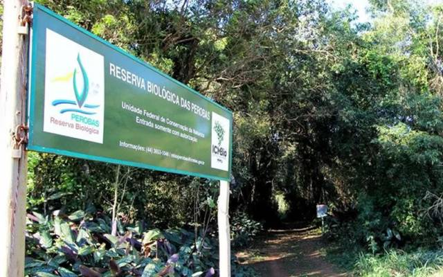
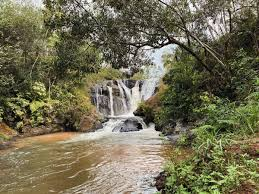
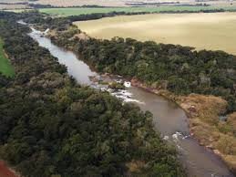

Localizado na região noroeste do Paraná, com cerca de 8.095 habitantes (estimativa IBGE 2024). A cidade é conhecida pelo seu forte contato com a natureza e por uma história ligada aos tropeiros e à Estrada da Boiadeira.

Um dos principais patrimônios naturais da região, com áreas de Mata Atlântica para conservação e biodiversidade, localizada entre Tuneiras do Oeste e Cianorte.

Ponto natural voltado para o lazer e contato com a natureza.

Área que abrange o município, oferecendo trilhas e mirantes para observação da fauna e flora.
Eventos comorodeio com shows nacionais, a tradicional Festa da Gaita (Gaitaço) e eventos de fim de ano.